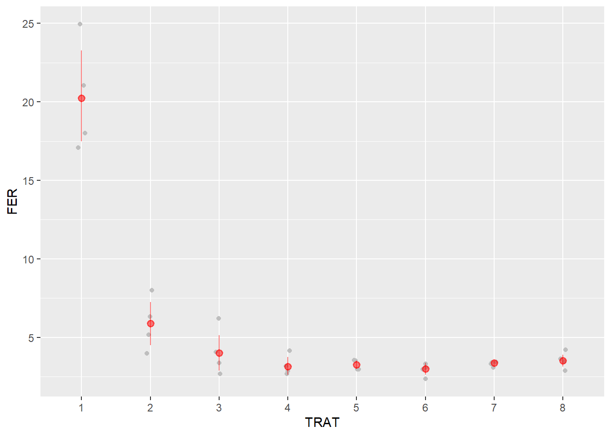
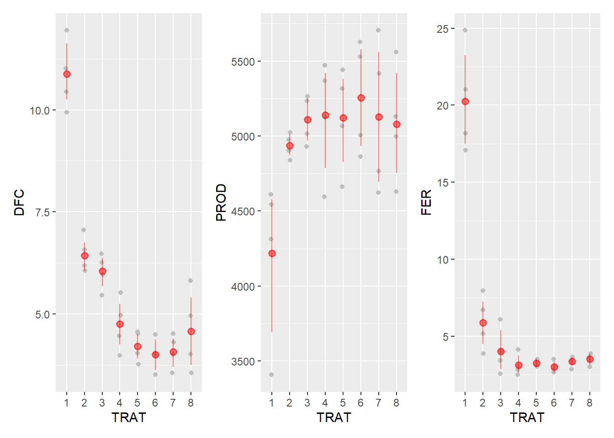

Carregamos os pacotes tidyverse (para manipulação e visualização de dados) e gsheet (para ler dados do Google Sheets). Em seguida, a função gsheet2tbl foi é utilizada para ler os dados do Google Drive, armazenando-os no data frame soja. Por fim, a função mutate do pacote dplyr (parte do tidyverse) foi usada para converter as colunas TRAT e BLOCO em fatores, garantindo que esses dados sejam tratados como variáveis categóricas no data frame.
library(tidyverse)
── Attaching core tidyverse packages ──────────────────────── tidyverse 2.0.0 ──
✔ dplyr 1.1.4 ✔ readr 2.1.5
✔ forcats 1.0.0 ✔ stringr 1.5.1
✔ ggplot2 3.4.4 ✔ tibble 3.2.1
✔ lubridate 1.9.3 ✔ tidyr 1.3.0
✔ purrr 1.0.2
── Conflicts ────────────────────────────────────────── tidyverse_conflicts() ──
✖ dplyr::filter() masks stats::filter()
✖ dplyr::lag() masks stats::lag()
ℹ Use the conflicted package (<http://conflicted.r-lib.org/>) to force all conflicts to become errors
library(gsheet)
Warning: package 'gsheet' was built under R version 4.3.3
soja <-gsheet2tbl("https://docs.google.com/spreadsheets/d/1bq2N19DcZdtax2fQW9OHSGMR0X2__Z9T/edit#gid=866852711")soja <- soja |>mutate(TRAT =as.factor(TRAT),BLOCO =as.factor(BLOCO))
Visualização dos dados
Carregamos as bibliotecas ggplot2 (para criação de gráficos) e Hmisc (para funções estatísticas). Em seguida, os dados do data frame soja foram utilizados para criar um gráfico utilizando a função ggplot. Os dados são mapeados de forma que a variável TRAT é representada no eixo x e a variável DFC no eixo y. A função geom_jitter adiciona um gráfico de dispersão com um pequeno desvio horizontal (width = 0.05) para evitar sobreposição de pontos, usando a cor cinza (“gray”). A função stat_summary adiciona um resumo estatístico, onde fun.data = "mean_cl_boot" calcula a média e o intervalo de confiança utilizando o método bootstrap, e os resultados são exibidos em vermelho (“red”) com uma espessura de linha de 0.5 e uma opacidade de 0.5. Finalmente, o objeto dfc armazena o gráfico resultante.
library(ggplot2)library(Hmisc)
Warning: package 'Hmisc' was built under R version 4.3.3
Attaching package: 'Hmisc'
The following objects are masked from 'package:dplyr':
src, summarize
The following objects are masked from 'package:base':
format.pval, units
dfc <-soja |>ggplot(aes(TRAT, DFC))+geom_jitter(width =0.05, color ="gray")+stat_summary(fun.data ="mean_cl_boot", size =0.5, color ="red", alpha =0.5)dfc
Foram realizados as mesmas etapas igual ao item anterior
fer <-soja |>ggplot(aes(TRAT, FER))+geom_jitter(width =0.05, color ="gray")+stat_summary(fun.data ="mean_cl_boot", size =0.5, color ="red", alpha =0.5)fer

Foram realizados as mesmas etapas igual aos itens anteriores
prod <-soja |>ggplot(aes(TRAT, PROD))+geom_jitter(width =0.05, color ="gray")+stat_summary(fun.data ="mean_cl_boot", size =0.5, color ="red", alpha =0.5)prod
Carregamos o pacote patchwork a para facilitar a combinação de múltiplos gráficos em uma única visualização. Em seguida, o código combina os gráficos dfc, prod, e fer lado a lado em uma única visualização utilizando a sintaxe dfc | prod | fer. A barra vertical (|) é usada para colocar os gráficos lado a lado.
library(patchwork)
Warning: package 'patchwork' was built under R version 4.3.3
(dfc|prod|fer)

Anova
Primeiramente, criamos um modelo linear aov_dfc para a variável DFC em função de TRAT e BLOCO utilizando a função lm. Em seguida, a análise de variância (ANOVA) é realizada com a função anova. Carregamos o pacote performance para verificar a heterocedasticidade e a normalidade dos resíduos do modelo aov_dfc utilizando as funções check_heteroscedasticity e check_normality. A biblioteca emmeans é utilizada para calcular as médias marginais ajustadas dos níveis de TRAT, armazenadas em medias_dfc. A função pwpm exibe a matriz de comparações múltiplas entre as médias. A biblioteca multcomp é usada para gerar letras indicadoras de agrupamento homogêneo com a função cld. As mesmas etapas foram realizadas para as variáveis fer e prod.
aov_dfc <-lm (DFC ~ TRAT + BLOCO,data = soja)anova(aov_dfc)
Analysis of Variance Table
Response: DFC
Df Sum Sq Mean Sq F value Pr(>F)
TRAT 7 149.299 21.3284 51.5490 8.218e-12 ***
BLOCO 3 0.461 0.1537 0.3716 0.7743
Residuals 21 8.689 0.4138
---
Signif. codes: 0 '***' 0.001 '**' 0.01 '*' 0.05 '.' 0.1 ' ' 1
library(performance)
Warning: package 'performance' was built under R version 4.3.3
check_heteroscedasticity(aov_dfc)
OK: Error variance appears to be homoscedastic (p = 0.532).
check_normality(aov_dfc)
OK: residuals appear as normally distributed (p = 0.978).
library(emmeans)
Warning: package 'emmeans' was built under R version 4.3.3
Warning: package 'multcomp' was built under R version 4.3.3
Carregando pacotes exigidos: mvtnorm
Carregando pacotes exigidos: survival
Carregando pacotes exigidos: TH.data
Carregando pacotes exigidos: MASS
Attaching package: 'MASS'
The following object is masked from 'package:patchwork':
area
The following object is masked from 'package:dplyr':
select
Attaching package: 'TH.data'
The following object is masked from 'package:MASS':
geyser
cld(medias_dfc, Letters = LETTERS)
TRAT emmean SE df lower.CL upper.CL .group
6 4.00 0.322 21 3.33 4.67 A
7 4.08 0.322 21 3.41 4.74 A
5 4.20 0.322 21 3.53 4.87 A
8 4.58 0.322 21 3.91 5.24 AB
4 4.75 0.322 21 4.08 5.42 AB
3 6.05 0.322 21 5.38 6.72 BC
2 6.42 0.322 21 5.76 7.09 C
1 10.88 0.322 21 10.21 11.54 D
Results are averaged over the levels of: BLOCO
Confidence level used: 0.95
P value adjustment: tukey method for comparing a family of 8 estimates
significance level used: alpha = 0.05
NOTE: If two or more means share the same grouping symbol,
then we cannot show them to be different.
But we also did not show them to be the same.
OK: residuals appear as normally distributed (p = 0.255).
library(emmeans)medias_fer <-emmeans(aov_fer, ~ TRAT, type ="response") ##como transformei, acrescento essa função para ele pegar as médias verdadeirasmedias_fer
TRAT response SE df lower.CL upper.CL
1 20.02 1.959 21 16.33 24.54
2 5.68 0.556 21 4.63 6.96
3 3.81 0.373 21 3.11 4.67
4 3.08 0.301 21 2.51 3.78
5 3.24 0.317 21 2.64 3.97
6 2.98 0.292 21 2.43 3.65
7 3.37 0.330 21 2.75 4.13
8 3.48 0.341 21 2.84 4.27
Results are averaged over the levels of: BLOCO
Confidence level used: 0.95
Intervals are back-transformed from the log scale
TRAT response SE df lower.CL upper.CL .group
6 2.98 0.292 21 2.43 3.65 A
4 3.08 0.301 21 2.51 3.78 A
5 3.24 0.317 21 2.64 3.97 A
7 3.37 0.330 21 2.75 4.13 A
8 3.48 0.341 21 2.84 4.27 A
3 3.81 0.373 21 3.11 4.67 AB
2 5.68 0.556 21 4.63 6.96 B
1 20.02 1.959 21 16.33 24.54 C
Results are averaged over the levels of: BLOCO
Confidence level used: 0.95
Intervals are back-transformed from the log scale
P value adjustment: tukey method for comparing a family of 8 estimates
Tests are performed on the log scale
significance level used: alpha = 0.05
NOTE: If two or more means share the same grouping symbol,
then we cannot show them to be different.
But we also did not show them to be the same.
aov_prod <-lm (PROD ~ TRAT + BLOCO,data = soja)anova(aov_prod)
Analysis of Variance Table
Response: PROD
Df Sum Sq Mean Sq F value Pr(>F)
TRAT 7 2993906 427701 2.6367 0.04021 *
BLOCO 3 105665 35222 0.2171 0.88340
Residuals 21 3406431 162211
---
Signif. codes: 0 '***' 0.001 '**' 0.01 '*' 0.05 '.' 0.1 ' ' 1
aov_fer<-lm(log(FER2)~ TRAT + BLOCO,data=soja)anova(aov_fer)
Analysis of Variance Table
Response: log(FER2)
Df Sum Sq Mean Sq F value Pr(>F)
TRAT 7 0.125861 0.0179801 11.3509 6.763e-06 ***
BLOCO 3 0.020357 0.0067856 4.2837 0.01655 *
Residuals 21 0.033265 0.0015840
---
Signif. codes: 0 '***' 0.001 '**' 0.01 '*' 0.05 '.' 0.1 ' ' 1
Primeiramente, foi um data frame df_prod a partir dos resultados de médias marginais agrupadas medias_prod_group. Em seguida, foi utilizada a função ggplot para criar um gráfico de pontos com a variável TRAT no eixo x e emmean no eixo y, e os limites do eixo y são definidos entre 2000 e 7000. Adicionou-se uma barra de erro com geom_errorbar, onde os limites mínimo (lower.CL) e máximo (upper.CL) são especificados. O gráfico é anotado com a letra “A” em uma posição específica utilizando a função annotate. A função knitr::kable foi utilizada para criar uma tabela formatada com as colunas TRAT, emmean e .group do data frame df_prod, adequada para inclusão em um artigo. A biblioteca writexl foi carregada para gerar um arquivo Excel a partir do data frame df_prod, que é salvo como “df_prod.xlsx”.
df_prod <-data.frame(medias_prod_group)df_prod |>ggplot(aes(TRAT, emmean))+geom_point()+ylim(2000,7000)+geom_errorbar(aes(min = lower.CL,max = upper.CL),width =0.1)+annotate( geom ="text", x =1.1, y =4200,label ="A") #exemplo de como coloca letra no gráfico
knitr::kable(df_prod |> dplyr ::select (TRAT, emmean, .group)) ##Fazer a tabela do artigo, já sai todas as informações
TRAT
emmean
.group
1
1
4219.25
A
2
2
4935.00
AB
8
8
5078.25
AB
3
3
5110.00
AB
5
5
5122.00
AB
7
7
5127.50
AB
4
4
5140.25
AB
6
6
5256.25
B
library(writexl) #Gera sua tabela no excel pronta
Warning: package 'writexl' was built under R version 4.3.3